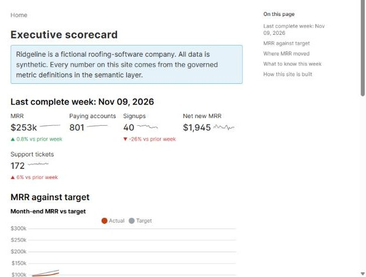

Analytics engineering · public
Ridgeline Analytics
A full analytics platform for a made-up roofing software company, on synthetic data. Raw events go in one end, and a live executive scorecard comes out the other, rebuilt every night.
- 31 dbt models
- 94 tests on every change
- 27 governed metrics
- 3.7x conversion in the top-scored leads
